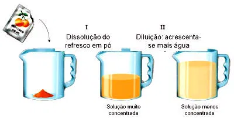
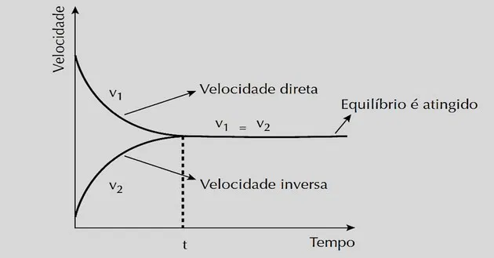

Bem-vindo ao Catálogo de Vídeos de Química do Terceiro Trimestre! Este site foi desenvolvido para reunir, em um só lugar, os principais vídeos estudados durante as aulas de Química. Aqui, você poderá revisar conteúdos importantes, como reações químicas, ligações entre átomos, propriedades da matéria e muito mais. O objetivo é facilitar o aprendizado e oferecer um material de apoio acessível e dinâmico para os estudantes. Explore os vídeos, aprimore seus conhecimentos e descubra como a Química está presente em nosso cotidiano!
PPM (partes por milhão) é uma unidade usada para expressar a concentração de uma substância muito pequena em uma mistura ou solução. Ela indica quantas partes de um determinado componente existem em um milhão de partes totais da amostra. Por exemplo, uma concentração de 1 ppm significa que há 1 parte de soluto em 1.000.000 de partes de solução. Esse conceito é muito utilizado em Química Ambiental e Analítica para medir poluentes na água, no ar ou em alimentos, quando as quantidades são muito pequenas para serem expressas em outras unidades.

A diluição das soluções é o processo de diminuir a concentração de um soluto em uma solução, adicionando mais solvente, geralmente água. Durante a diluição, a quantidade de soluto permanece a mesma, mas o volume total da solução aumenta, tornando-a menos concentrada. A relação entre as concentrações e volumes antes e depois da diluição é dada pela fórmula C₁V₁ = C₂V₂, em que C₁ e V₁ representam a concentração e o volume iniciais, e C₂ e V₂, a concentração e o volume finais. Esse processo é muito usado em laboratórios para preparar soluções com concentrações específicas de forma prática e segura.
Misturas são combinações de duas ou mais substâncias que mantêm suas propriedades originais e não passam por reações químicas entre si. Elas podem ser classificadas em misturas homogêneas e misturas heterogêneas. Nas misturas homogêneas, os componentes se distribuem de forma uniforme, formando uma única fase visível, como a água com sal. Já nas misturas heterogêneas, é possível identificar mais de uma fase, como a água e o óleo. O estudo das misturas é importante porque muitos materiais do nosso cotidiano — como o ar, o leite e as ligas metálicas — são formados por diferentes substâncias misturadas.

O equilíbrio químico é o estado em que uma reação reversível ocorre nos dois sentidos — direto e inverso — com a mesma velocidade, fazendo com que as concentrações dos reagentes e produtos permaneçam constantes ao longo do tempo. Isso não significa que a reação parou, mas que ela está em equilíbrio dinâmico, pois as transformações continuam acontecendo simultaneamente. O equilíbrio químico é influenciado por fatores como temperatura, concentração e pressão, conforme o Princípio de Le Chatelier, que explica como o sistema reage para minimizar perturbações externas e manter o equilíbrio.
O Princípio de Le Chatelier afirma que, quando um sistema em equilíbrio químico é submetido a alguma perturbação — como variação de temperatura, pressão ou concentração —, ele reage de modo a minimizar essa alteração e restabelecer o equilíbrio. Por exemplo, se aumentamos a concentração de um reagente, o sistema tende a consumir parte desse reagente, favorecendo a formação de produtos. Esse princípio é fundamental para entender e controlar reações químicas em processos industriais e laboratoriais, permitindo prever como as condições externas afetam o equilíbrio das reações.
Os principais fatores que deslocam o equilíbrio químico são a concentração, a temperatura e a pressão (no caso de gases). Concentração: ao aumentar a quantidade de reagentes, o equilíbrio se desloca no sentido da formação de produtos; ao aumentar a quantidade de produtos, o equilíbrio se desloca no sentido dos reagentes. Temperatura: quando a reação é endotérmica, o aumento da temperatura favorece o sentido direto (absorve calor); já em reações exotérmicas, o aumento da temperatura favorece o sentido inverso (libera calor). Pressão: afeta apenas reações que envolvem gases. O aumento da pressão desloca o equilíbrio para o lado com menor número de moléculas gasosas, enquanto a diminuição da pressão favorece o lado com maior número de moléculas gasosas. Esses deslocamentos ocorrem conforme o Princípio de Le Chatelier, que explica como o sistema reage para restabelecer o equilíbrio após uma perturbação.
O produto iônico da água é o resultado da autoionização da própria água, um processo em que uma pequena quantidade de moléculas de H₂O se dissocia em íons hidrogênio (H⁺, ou mais corretamente H₃O⁺) e hidróxido (OH⁻). Essa reação é representada por: [ H_2O (l) ⇌ H^+ (aq) + OH^- (aq) ] Em condições normais de temperatura (25 °C), a concentração desses íons é muito pequena, mas constante, sendo: [ [H^+] = [OH^-] = 1 \times 10^{-7} , \text{mol/L} ] O produto dessas concentrações é chamado de produto iônico da água (Kw): [ K_w = [H^+][OH^-] = 1 \times 10^{-14} , \text{(a 25 °C)} ] Esse valor é fundamental para o cálculo do pH e do pOH, e ajuda a determinar se uma solução é ácida, básica ou neutra.
O título ou fração em massa é uma forma de expressar a concentração de uma solução, indicando a razão entre a massa do soluto e a massa total da solução. É uma medida adimensional (sem unidade), pois representa uma proporção. A fórmula é: [ t = \frac{m_{\text{soluto}}}{m_{\text{solução}}} ] Quando o valor é multiplicado por 100, obtemos o título percentual em massa (% m/m), que mostra a quantidade de soluto em 100 partes de solução. Por exemplo, uma solução com título 0,10 (ou 10%) significa que, em 100 g de solução, há 10 g de soluto e 90 g de solvente. Essa forma de concentração é muito utilizada em produtos comerciais, como soluções de limpeza e medicamentos.
A concentração comum e a concentração molar são duas maneiras de expressar quanto soluto está dissolvido em uma solução. Concentração comum (ou concentração em g/L): indica a massa de soluto, em gramas, presente em um litro de solução. A fórmula é: [ C = \frac{m_{\text{soluto}}}{V_{\text{solução}}} ] onde ( C ) é a concentração comum (g/L), ( m_{\text{soluto}} ) é a massa do soluto (g) e ( V_{\text{solução}} ) é o volume da solução (L). Concentração molar (ou molaridade): indica o número de mols de soluto dissolvidos em um litro de solução. A fórmula é: [ M = \frac{n_{\text{soluto}}}{V_{\text{solução}}} ] onde ( M ) é a molaridade (mol/L), ( n_{\text{soluto}} ) é a quantidade de matéria (mol) e ( V_{\text{solução}} ) é o volume (L). Essas duas formas de concentração são amplamente utilizadas em laboratório para preparar e comparar soluções químicas de maneira precisa.
As soluções podem ser classificadas de acordo com seu estado físico e a quantidade de soluto presente: 1. Quanto ao estado físico: Soluções líquidas: o solvente é líquido (ex.: água com sal, água com açúcar). Soluções sólidas: o solvente é sólido (ex.: ligas metálicas, como bronze ou aço). Soluções gasosas: o solvente é gás (ex.: ar, mistura de oxigênio e nitrogênio). 2. Quanto à concentração de soluto: Saturada: contém a máxima quantidade de soluto que pode se dissolver àquela temperatura. Insaturada: contém menos soluto do que o máximo que poderia dissolver; ainda é possível adicionar mais soluto. Supersaturada: contém mais soluto do que o limite de saturação; é instável e o excesso pode se cristalizar facilmente. Essa classificação ajuda a entender o comportamento das soluções em diferentes condições e é importante para aplicações laboratoriais e industriais.